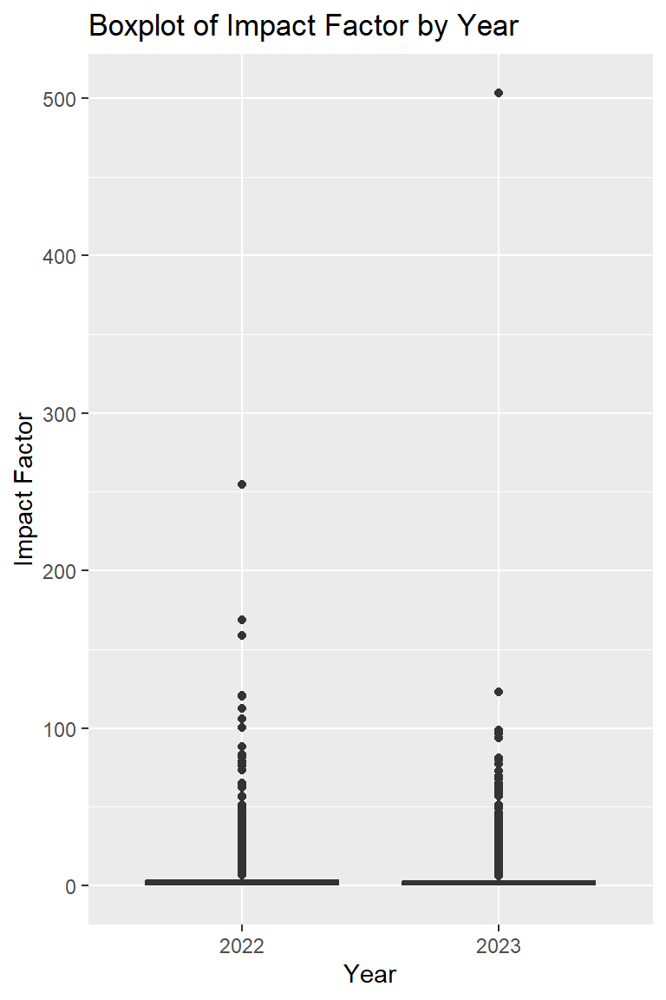
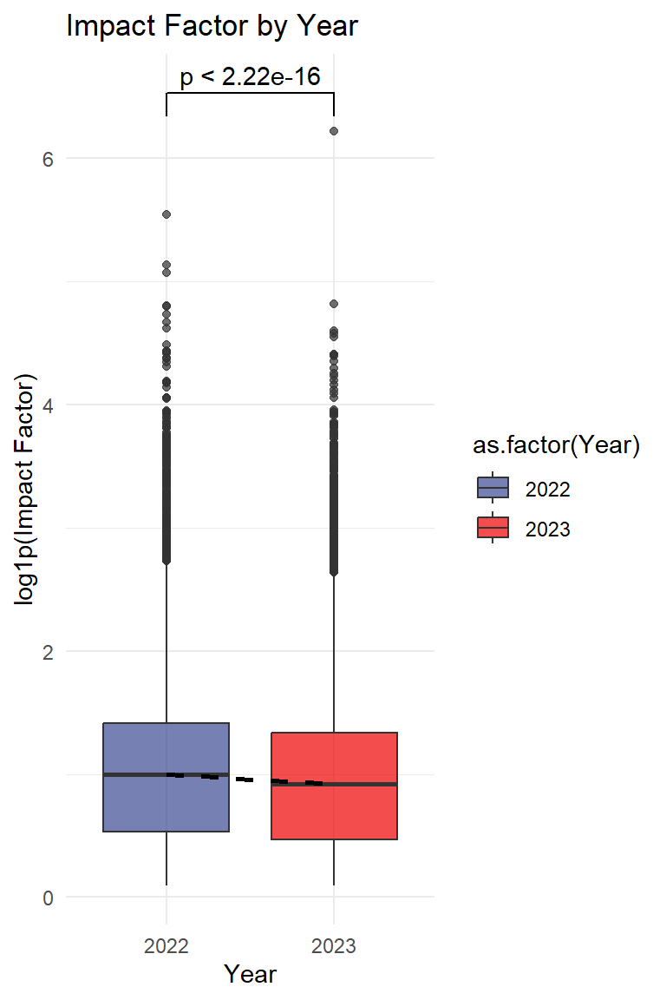

通货紧缩的影响因子
原文：https://mp.weixin.qq.com/s?__biz=MzAwMzIzOTk5OQ==&mid=2247519764&idx=1&sn=ebefd61a929b25b6f0234fe067a819ce&chksm=9b3cf744ac4b7e52ed826209b11f6ce5096400f9f06d54fc4426d509dfd256e72c17df6a0675#rd 合集：漫谈胡侃
新一年的影响因子(Impact Factor, IF)前几周公布了。IF是由 Clarivate 的Journal Citation Reports(也就是大家熟知的JCR: https://jcr.clarivate.com/jcr/home)发布的期刊评价指标，目前来说是衡量一个期刊质量的首要可量化标准，其计算公式为该期刊第三年的被引用数/前两年的发文数。也就是说今年(2024)发布的2023影响因子=23年被引用数/(2021年发文量+2022年发文量)，基本上可以反应一个期刊三年内的热度。而大家今年中的文章，评奖 、毕业 时参考的也就是昨天发布的这个数值，值得一提的是，大部分期刊的影响因子在2024年6月公布的。网传了几个影响因子数据表，我们来稍微探索一下：
读取并整理数据
JCR_2022 <- read.csv('JCR_2022.csv',header = T)
head(JCR_2022)
## journal_name issn eissn
## 1 CA-A CANCER JOURNAL FOR CLINICIANS 0007-9235 1542-4863
## 2 LANCET 0140-6736 1474-547X
## 3 NEW ENGLAND JOURNAL OF MEDICINE 0028-4793 1533-4406
## 4 JAMA-JOURNAL OF THE AMERICAN MEDICAL ASSOCIATION 0098-7484 1538-3598
## 5 NATURE REVIEWS DRUG DISCOVERY 1474-1776 1474-1784
## 6 NATURE REVIEWS MOLECULAR CELL BIOLOGY 1471-0072 1471-0080
## category
## 1 ONCOLOGY - SCIE(Q1)
## 2 MEDICINE, GENERAL & INTERNAL - SCIE(Q1)
## 3 MEDICINE, GENERAL & INTERNAL - SCIE(Q1)
## 4 MEDICINE, GENERAL & INTERNAL - SCIE(Q1)
## 5 BIOTECHNOLOGY & APPLIED MICROBIOLOGY - SCIE(Q1); PHARMACOLOGY & PHARMACY - SCIE(Q1)
## 6 CELL BIOLOGY - SCIE(Q1)
## citations jif jci percentageOAGold
## 1 66163 254.7 188.67 92.31
## 2 365043 168.9 21.23 21.18
## 3 456891 158.5 24.74 0.30
## 4 211699 120.7 11.43 1.47
## 5 48043 120.1 12.48 6.03
## 6 65845 112.7 8.72 2.08
JCR_2023 <- read.csv('JCR_2023.csv',header = T,fill = T)
head(JCR_2023)
## JOURNAL_NAME Abbreviation ISSN
## 1 CA-A CANCER JOURNAL FOR CLINICIANS CA-CANCER J CLIN 0007-9235
## 2 NATURE REVIEWS DRUG DISCOVERY NAT REV DRUG DISCOV 1474-1776
## 3 LANCET LANCET 0140-6736
## 4 NEW ENGLAND JOURNAL OF MEDICINE NEW ENGL J MED 0028-4793
## 5 BMJ-British Medical Journal BMJ-BRIT MED J 0959-535X
## 6 NATURE REVIEWS MOLECULAR CELL BIOLOGY NAT REV MOL CELL BIO 1471-0072
## EISSN IF Categories Quartile RANK
## 1 1542-4863 503.1 ONCOLOGY Q1 1/322
## 2 1474-1784 122.7 PHARMACOLOGY & PHARMACY Q1 1/354
## 3 1474-547X 98.4 MEDICINE, GENERAL & INTERNAL Q1 1/325
## 4 1533-4406 96.2 MEDICINE, GENERAL & INTERNAL Q1 2/325
## 5 1756-1833 93.6 MEDICINE, GENERAL & INTERNAL Q1 3/325
## 6 1471-0080 81.3 CELL BIOLOGY Q1 1/205
JCR_2022 <-data.frame(Journal = JCR_2022$journal_name,
IF = JCR_2022$jif,
Year = 2022)
JCR_2023 <-data.frame(Journal = JCR_2023$JOURNAL_NAME,
IF = JCR_2023$IF,
Year = 2023)
JCR <- rbind(JCR_2022,JCR_2023)
head(JCR)
## Journal IF Year
## 1 CA-A CANCER JOURNAL FOR CLINICIANS 254.7 2022
## 2 LANCET 168.9 2022
## 3 NEW ENGLAND JOURNAL OF MEDICINE 158.5 2022
## 4 JAMA-JOURNAL OF THE AMERICAN MEDICAL ASSOCIATION 120.7 2022
## 5 NATURE REVIEWS DRUG DISCOVERY 120.1 2022
## 6 NATURE REVIEWS MOLECULAR CELL BIOLOGY 112.7 2022
# 影响因子转化为数值，没有影响因子的期刊对应值会变成NA
JCR$IF <- as.numeric(JCR$IF)
## Warning: 强制改变过程中产生了NA
# 保留不包含NA的行
JCR <- na.omit(JCR)
# 把年份转换为非连续变量的因子：
JCR$Year <- as.factor(JCR$Year)
可视化
library(ggplot2)
## Warning: 程辑包'ggplot2'是用R版本4.3.3 来建造的
# 绘制箱线图
ggplot(JCR, aes(x = Year, y = IF)) +
geom_boxplot() +
labs(x = "Year", y = "Impact Factor") +
ggtitle("Boxplot of Impact Factor by Year")

# 有些期刊影响因子比较bug
library(dplyr)
## Warning: 程辑包'dplyr'是用R版本4.3.3 来建造的
##
## 载入程辑包：'dplyr'
## The following objects are masked from 'package:stats':
##
## filter, lag
## The following objects are masked from 'package:base':
##
## intersect, setdiff, setequal, union
JCR %>% group_by(Year) %>% top_n(.,wt=IF,n=5)# 可以看到，这些CA、NEJM、LANCET这些神刊会让其它杂志堆积在数据底部
## # A tibble: 10 × 3
## # Groups: Year [2]
## Journal IF Year
## <chr> <dbl> <fct>
## 1 CA-A CANCER JOURNAL FOR CLINICIANS 255. 2022
## 2 LANCET 169. 2022
## 3 NEW ENGLAND JOURNAL OF MEDICINE 158. 2022
## 4 JAMA-JOURNAL OF THE AMERICAN MEDICAL ASSOCIATION 121. 2022
## 5 NATURE REVIEWS DRUG DISCOVERY 120. 2022
## 6 CA-A CANCER JOURNAL FOR CLINICIANS 503. 2023
## 7 NATURE REVIEWS DRUG DISCOVERY 123. 2023
## 8 LANCET 98.4 2023
## 9 NEW ENGLAND JOURNAL OF MEDICINE 96.2 2023
## 10 BMJ-British Medical Journal 93.6 2023
# 取个log1p重新可视化：
JCR$IF_log_1P <- log1p(JCR$IF)
library(ggsignif)
## Warning: 程辑包'ggsignif'是用R版本4.3.3 来建造的
library(ggsci)
## Warning: 程辑包'ggsci'是用R版本4.3.3 来建造的
ggplot(JCR, aes(x = as.factor(Year), y = IF_log_1P, fill = as.factor(Year))) +
geom_boxplot(alpha = 0.7) + # alpha 控制透明度
stat_summary(fun = median, geom = "line", aes(group = 1), color = "black", size = 1, linetype = "dashed") + # 添加中位数趋势线
labs(x = "Year", y = "log1p(Impact Factor)") +# 坐标轴文字
ggtitle("Impact Factor by Year") +# 标题
scale_fill_manual(values = ggsci::pal_aaas()(8)) + # 使用 ggsci 包中的调色板
theme_minimal()+# 设置背景为空白
geom_signif(comparisons = list(c('2022','2023')))# 添加配色
## Warning: Using `size` aesthetic for lines was deprecated in ggplot2 3.4.0.
## ℹ Please use `linewidth` instead.
## This warning is displayed once every 8 hours.
## Call `lifecycle::last_lifecycle_warnings()` to see where this warning was
## generated.

# 看一下平均IF的比值，平均下降了12.5%的样子
mean(filter(JCR,Year == 2023) %>% pull(IF))/mean(filter(JCR,Year == 2022) %>% pull(IF))
## [1] 0.8758876
有没有哪个杂志的影响因子是上升的呢
# 由于数据集来源于互联网，可能有一些期刊名不统一，我们取出2022和2023年度中都有IF收录的期刊：
journal_list <- intersect(filter(JCR,Year==2023) %>% pull(Journal) %>% unique(.),
filter(JCR,Year==2022) %>% pull(Journal) %>% unique(.))
increase_data <- data.frame()
for (run_journal in journal_list) { # 取出有2023影响因子记录的期刊名参与循环
temp_JCR <- filter(JCR,Journal == run_journal)
IF_2022 <- filter(temp_JCR,Year==2022) %>% pull(IF)
IF_2023 <- filter(temp_JCR,Year==2023) %>% pull(IF)
if (IF_2023 > IF_2022) {
increase_data <- rbind(increase_data, c(run_journal,IF_2023,IF_2022) )
}
}
colnames(increase_data) <- c('name','IF_2023','IF_2022')
head(increase_data)
## name IF_2023 IF_2022
## 1 CA-A CANCER JOURNAL FOR CLINICIANS 503.1 254.7
## 2 NATURE REVIEWS DRUG DISCOVERY 122.7 120.1
## 3 Nature Reviews Clinical Oncology 81.1 78.8
## 4 Foundations and Trends in Machine Learning 65.3 32.8
## 5 ANNALS OF ONCOLOGY 56.7 50.5
## 6 Nature Reviews Methods Primers 50.1 39.5
fivenum(as.numeric(increase_data$IF_2023))
## [1] 0.2 0.7 1.5 2.7 503.1
fivenum(as.numeric(JCR_2023$IF) %>% na.omit())
## Warning in na.omit(.): 强制改变过程中产生了NA
## [1] 0.1 0.6 1.5 2.8 503.1
# 保存到本地，感兴趣的同学可以下载下来看一看
write.csv(increase_data,'IF_increase_data.csv')
链接：https://pan.baidu.com/s/1vXGT1CTyl0MMNrmP8gKZHg?pwd=5mgn 提取码：5mgn
数据来自互联网，推荐大家去JCR获取更准确的数据：https://jcr.clarivate.com/jcr/home

如何联系我们

 公众号后台消息回复不便，这里给大家留一下领取资料及免费服务器(足够支持你完成硕博生涯的生信环境)的微信号 ，方便各位随时交流、提建议（别问在么，添加时直接说来意）。此外呼声一直很高的交流群 也建好了，欢迎大家入群讨论：
公众号后台消息回复不便，这里给大家留一下领取资料及免费服务器(足够支持你完成硕博生涯的生信环境)的微信号 ，方便各位随时交流、提建议（别问在么，添加时直接说来意）。此外呼声一直很高的交流群 也建好了，欢迎大家入群讨论：
大家可以阅读完这几篇之后添加给生信入门初学者的小贴士 如何搜索公众号过往发布内容

 您点的每个赞和在看，我都认真当成了喜欢
您点的每个赞和在看，我都认真当成了喜欢